That single sentence is the whole foundation. Everything else in Soulism — fifteen principles, a way of living, an answer to the biggest questions — follows honestly from it.
Soulism is the conviction that a person's own conscious awareness — examined honestly, without fear, without inherited authority standing in the way — is the most reliable guide a human being has. Not infallible. Not magic. Just the one instrument every person already carries, unmediated, before any book, teacher, or tradition ever reaches them.
It treats consciousness the way a careful thinker treats any powerful tool: worth trusting because it's yours, worth testing because nothing — including Soulism itself — deserves to be believed simply because it was asserted with confidence.
Why It Was CreatedMost of us receive a complete belief system before we're old enough to consent to it — what's true, what's sacred, what's forbidden, what happens when we die. Some people spend their whole lives defending that inheritance without ever examining it. Others quietly abandon it and are left with nothing to replace it — a kind of drifting that looks like freedom but doesn't feel like it.
Soulism is a third option. Examine what you were given. Keep what genuinely holds up. Set aside what doesn't. And where there's an honest gap, build something — deliberately, with your eyes open, rather than either obeying an old answer or living with none at all.
Its PurposeSoulism doesn't exist to recruit anyone into a new set of fixed answers. Its purpose is to hand back a process — a way of examining fear, belief, morality, and meaning that any person can use for themselves, for the rest of their life, without needing to keep asking someone else's permission to think.
How It's DifferentTraditional religion typically starts with a claim about the universe and asks a person to arrange their inner life around it, on authority. Simple atheism often stops at the rejection and doesn't always offer a replacement structure for meaning, ethics, or practice. Soulism takes a third position: it begins with your own awareness rather than a claim about the cosmos, and it takes the work of building meaning, ethics, and practice just as seriously as any religion does — without asking for belief on authority anywhere along the way.
Why It Matters NowPeople today are more disconnected from inherited religious certainty than at almost any point in history — and, at the same time, more anxious, more distracted, and more starved for genuine meaning. Rejecting an old framework without building a new one leaves a real gap. Soulism exists to fill that gap honestly: not with a new authority to obey, but with a method any thinking person can use to build a life that's actually examined, in an age that makes examined living unusually hard.
Try, right now, to doubt that you are aware of something. You can't do it — the act of doubting itself requires something doing the doubting. That's the whole reason Soulism starts here. Not because consciousness is perfect, but because it's the one part of your experience that was never filtered by an institution before it reached you.
Everything else in Soulism — ethics, the relationship between science and spirituality, the idea of living in the present — is what follows once you take that starting point seriously: build outward from your own honest awareness, rather than starting with someone else's conclusion and forcing your awareness to agree with it.
These four are often treated as though they compete with each other — as if being rational means giving up spirituality, or being spiritual means giving up evidence. Soulism treats them as different tools for the same honest project, not rivals.
Rationality and science are how consciousness checks itself against reality — the discipline that keeps honest self-examination from sliding into wishful thinking. Soulism doesn't ask you to set reason aside to have an inner life; it asks you to bring reason into your inner life.
Ethics, in this framework, isn't handed down from outside — it grows out of empathy (the ability to imagine another conscious being's experience) checked by reason (does this hold up consistently, not just for people like me) and grounded in real consequence (what actually happens when this choice is made).
Spirituality, freed from the requirement of ritual or doctrine, becomes simply this: the ongoing practice of understanding your own consciousness and living in real accordance with it. Science tells you what's true about the world. Ethics tells you how to act on it. Spirituality is the practice of staying awake while you do both.
Soulism is not a religion in the traditional sense. It asks for no ritual obedience, no membership, no belief adopted on authority. It does not ask you to believe anything because Shashank said so — that would defeat the entire point.
It is not a claim that has to be accepted whole. Every principle below is offered as an honestly-arrived-at conclusion — test each one the way you'd test anything else. Keep what holds up under your own reason and experience. Set aside what doesn't. A framework that couldn't survive being questioned would have no business asking anyone to trust it.
Each one in full — what it means, what it looks like in practice, and how it shows up in an ordinary day.
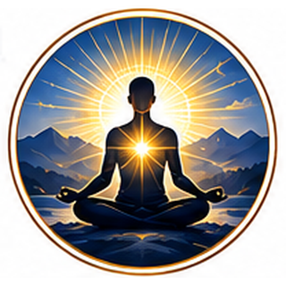
Your conscious awareness is the highest authority and the truest guide in your life — more reliable than any inherited doctrine or borrowed opinion.
Practical meaning: When deciding what to believe or how to act, the final check isn't "what does tradition say" — it's what your own honestly examined awareness actually tells you.
Daily life: Before accepting advice — from family, a public figure, or a headline — pause and ask whether it holds up when you examine it with your own mind.
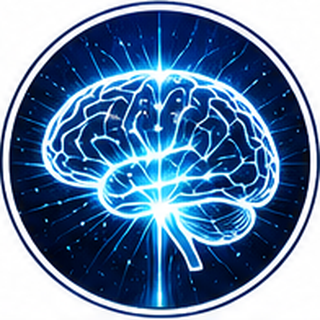
Conscious awareness is the fundamental source of thought, choice, growth, and transformation — every decision and every change you've undergone passed through it first.
Practical meaning: You are not a passive product of your circumstances. Consciousness is the power that lets you notice a pattern and choose to interrupt it.
Daily life: Catching yourself mid-reaction — pausing before an angry reply, noticing an old habit forming — is consciousness exercising its power in real time.
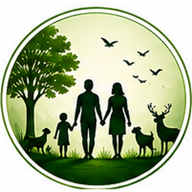
Every human being — and every living creature — carries the same fundamental reality of awareness. Respecting that awareness is a moral duty, not an optional courtesy.
Practical meaning: A person's background, beliefs, or circumstances don't change the basic respect their consciousness is owed.
Daily life: Fully listening to someone you disagree with, instead of mentally dismissing them, is this principle in direct practice.
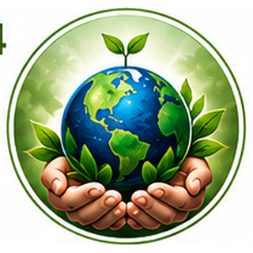
Nature is the foundation of life and consciousness itself. Treating it as disposable is treating your own foundation as disposable.
Practical meaning: Environmental responsibility isn't a separate cause from Soulism — it follows directly from taking consciousness seriously.
Daily life: A small daily choice — reducing waste, spending real time outdoors — keeps this gratitude alive.
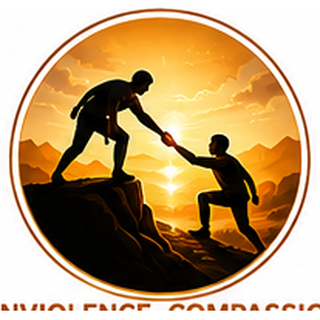
Compassion and nonviolence come first. But recognizing the right to self-defense when truly necessary isn't a contradiction — it's honest about what protecting consciousness sometimes requires.
Practical meaning: Nonviolence is a strong default, not an absolute rule that ignores real danger.
Daily life: Choosing to de-escalate a conflict whenever possible, while still holding a firm boundary when someone won't stop causing harm.
No person is superior or inferior because of religion, caste, race, gender, nationality, or social status. Consciousness doesn't come in tiers.
Practical meaning: Any belief system that ranks human worth by birth or background fails this test immediately.
Daily life: Noticing an inherited bias — even a subtle one — and questioning it honestly rather than excusing it.
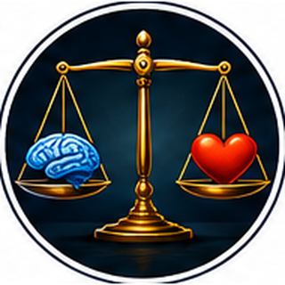
Truth is sought through reason, evidence, conscious awareness, and lived experience — not through authority or tradition alone.
Practical meaning: A belief only earns the name "true" once it survives honest scrutiny, not simply because it's old or widely held.
Daily life: Fact-checking a claim before repeating it, even one you want to be true.
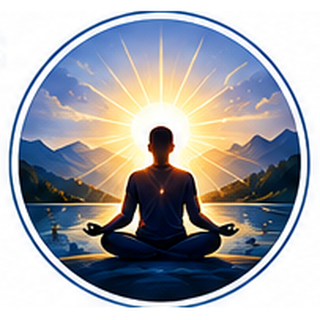
Spiritual growth comes from understanding and developing your own consciousness — not from rituals or dogma alone.
Practical meaning: You don't need a religious institution to have a rich inner life; you need honest self-examination.
Daily life: Five quiet, genuine minutes of reflection can do more than a ritual performed without understanding.
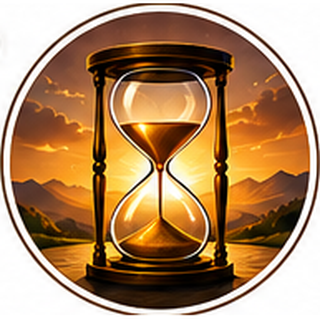
The present moment is the only reality directly available to you. Life should be lived consciously in the here and now, not endlessly postponed for some future certainty.
Practical meaning: Waiting for perfect clarity before living fully is its own kind of avoidance.
Daily life: Actually being present in a conversation, instead of mentally drafting your next reply.
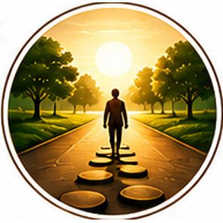
Human actions naturally produce consequences, experienced primarily within this same life — not deferred to some distant cosmic ledger.
Practical meaning: This makes your choices matter right now, not as an abstract future accounting.
Daily life: Noticing how a small act of honesty — or dishonesty — today shapes trust in a relationship this week.
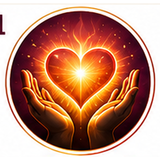
True morality arises from conscious awareness, empathy, and personal responsibility — not from fear of punishment.
Practical meaning: The most reliable moral compass is one you understand from the inside, not one you merely obey.
Daily life: Doing the right thing when no one is watching, because you understand why it matters.
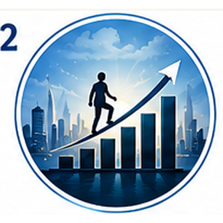
Knowledge, science, wealth, and progress are meaningful only when guided by awareness and ethical responsibility.
Practical meaning: Ambition without conscience isn't real progress — it's just acceleration in an unclear direction.
Daily life: Asking not just "can I achieve this" but "should I, and at what cost to others."
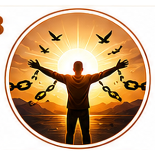
Fear, superstition, and mental conditioning are obstacles to clear thought. Freedom comes through awareness and understanding, not avoidance.
Practical meaning: A fear examined honestly usually loses most of its power over you.
Daily life: Naming a fear out loud, tracing where it came from, instead of letting it quietly steer your decisions.